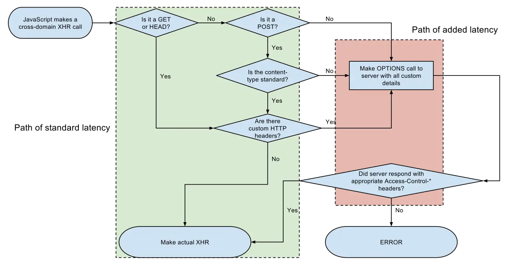

Short answer
CORS is a browser rule about whether a script may read a response from another origin.
The flowchart starts when JavaScript makes a cross-origin call. Some requests proceed, and others go through an OPTIONS preflight before the browser looks for access-control headers. A failure ends in an error. That is a script’s problem in a browser. A crawler fetching your HTML is not that script. SEO Health does not treat a CORS error as a robots.txt rule, and it does not treat a permissive CORS header as an invitation to index an API.
Definition
Robots.txt and X-Robots-Tag tell a crawler about fetching and indexing a URL. CORS tells a browser about a page’s script. Blocking another site’s script from reading your JSON does not block a crawler from requesting a public HTML URL, and allowing that read does not put the JSON in the sitemap. If the product list exists only behind a cross-origin call, publish an HTML URL that contains the list. The flowchart is a map of the browser’s choice. It is not a configuration this article tells you to copy onto a private API.
How a crawl meets this rule
Keep crawl rules in robots and headers, and use CORS only for what a browser script may read.
Do not noindex a page because a widget’s CORS request failed, and do not add an API URL to the sitemap because CORS allows it. Fetch the HTML URL directly and see whether the document is there. If a public asset such as a font or a stylesheet is blocked by a header you set, that can still break rendering. That is an asset problem, separate from robots. The diagram’s error box is the script’s error, not a crawl status.

What to check
- Product lists present in an HTML URL
- API URLs kept out of the sitemap
- Robots rules written as robots rules, not as CORS
- Fonts and stylesheets not accidentally blocked for your own pages
- One HTML URL fetched without relying on the script
A practical example
A parts table is loaded by a script from an API host. CORS fails in some browsers, and the team adds the API URL to the sitemap. The repair publishes /parts as HTML that includes the table, links to it, and leaves the API off the sitemap. CORS can stay strict on the API. The flowchart is not copied in as a policy.
What this does not claim
A CORS setting does not guarantee rankings or citations.
Where Mika Visibility files this
Mika Visibility groups crawlability with SEO Health: robots rules, status codes, and paths a crawler can follow. Broken paths and blocked templates are health findings. Missing topics are not. GEO still depends on pages a crawler can actually reach, but reachability does not write the answer for the buyer.
The flowchart is a browser’s decision about a script. A crawl is a fetch of a URL.
FAQ
What does CORS govern?
CORS is a browser rule about whether a script may read a response from another origin.
Where should crawl rules live?
Keep crawl rules in robots and headers, and use CORS only for what a browser script may read.
Does a CORS setting guarantee rankings?
A CORS setting does not guarantee rankings or citations.
Next step
Run a structured SEO + GEO audit to see health findings, growth gaps, and a blueprint you can act on.
Clearer entities, answers, evidence, and context make pages easier to understand and reference. Results in any answer product are not guaranteed.